Background
Oracle Integration provides native connectivity to Oracle and non-Oracle Software as a Service (SaaS) and On-premises applications, such as Oracle ERP Cloud, Oracle Service Cloud, HCM Cloud, Salesforce, Workday, EBS, SAP, NetSuite and so on. Oracle Integration adapters simplify connectivity by handling the underlying complexities of connecting to applications using industry-wide best practices. To connect to a system, you just need to create a connection that requires minimal connectivity information.
Use Case
This use case explores how to use of Oracle Integration with Oracle HCM REST and ATOM services to provide information to an identity management system hosted by a customer.
The following diagram shows the interaction between the systems involved in this use case:
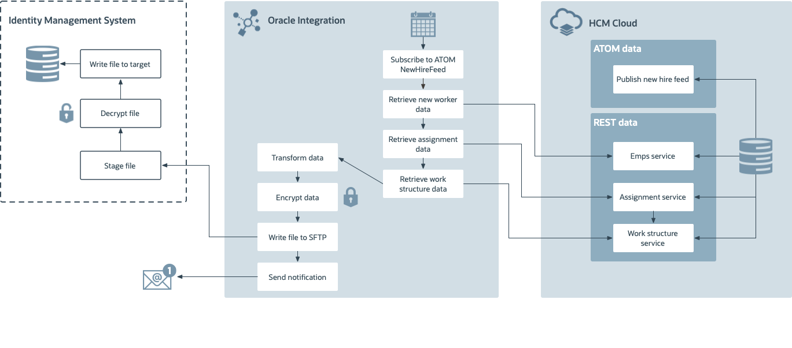
I removed Subscribe to ATOM New Hire Feed because my understanding is that this is done during design time. The rest of the boxes in the diagram are showing runtime events, so it's confusing to have design time taks mixed in. Please confirm or explain.
Before You Begin
Some steps in this tutorial have a  icon next to them. Click this
icon to copy the snippet of text to your clipboard and then paste where needed.
icon next to them. Click this
icon to copy the snippet of text to your clipboard and then paste where needed.
Your instructor will provide you the information you need to access the environments used in this lab.
For this lab we will provide you the following:
- Oracle Integration
- ERP Cloud R13+
- An FTP server
For your convenience we created and configured the following connections:
- HCM adapter:
HCM Cloud - FTP adapter:
FTP File Server
Get Your Oracle Integration (OIC) Environment
Select your environment and enter your user number to get the information to access Oracle Integration.
Oracle Integration Environment:
- URL:
Select an environment from the Oracle Integration Environment list. - User Name:
- Password: will be provided during the training session.
Get Your ERP Cloud Environment
Select your environment to get the information to access Oracle ERP Cloud.
ERP Cloud Environment:
- URL:
Select an environment from the ERP Cloud Environment list. - User Name:
- Password: will be provided during the training session.
Get Your FTP Environment
Select your environment to get the information to access the FTP server.
FTP Environment:
- URL:
- User Name:
- Password: will be provided during the training session.
Sign In
Open your Oracle Integration instance:
Enter your user name and password.
- Your user name is:
- Your password will be provided by the instructor during the training session.
- Your user name is:
Click Sign In.
The Home page appears.
You are now logged in and ready to use Oracle Integration.

Create the Integration
- In the Main Menu, click Integrations, and then click Integrations.
- On the Integrations page, click Create.
- In the Select an Integration Style dialog, select Scheduled Orchestration.
- Click Select.
- In the Create New Integration dialog, configure the integration:
What do you want to call your integration?
Enter
Directory SynchronizationWhat does this integration do?
Enter the following text:
This integration shows you how to use the HCM Cloud adapter with the REST adapter to generate a file for Identity Management.
- Click Create.
- Click Save.
Configure the Schedule Action
Configure the schedule action to get the last time the integration polled the ATOM service. This avoids pulling duplicate records from the ATOM feed.
- Select the Schedule action.
- Click
 .
. Click
 .
.A new row appears.
- Click the Parameter Name column and change the name to
ATOMLastRunDateTime. - Click the Description column and enter
Last successful processed ATOM pull. - In the Value column, enter
2019-01-01T00:00:00.000Z.This sets the initial date to retrieve the ATOM feed from HCM Cloud to January 1st 2019.
What do you mean with the warning below? When would the reader have to adjust the time and how? I can't tell them that they may need to do something without explaining when or how. "You may need to adjust this to a closer DateTime value depending on when you are building this integration. After the first time the integration is run, this value will be updated to reflect the actual Date and Time values."
- Click Close.
- Click Save.
Schedule the Next ATOM Polling
Schedule the current ATOM polling to the current date and time. The next time the integration runs, this will be the ATOMLastRunDateTime variable.
-
Click and from the Data section, drag and drop Assign to the Integration canvas, and place it after the Schedule activity.
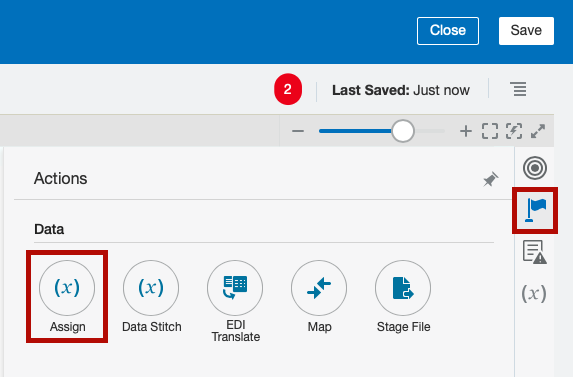The Create Action dialog appears.
- In the Name field, enter
assignCurrentTimeStamp. Click Create.
The Assign page appears.
- Click .
- Click the Variable column and change the name to
ts. In the Value column, click
.The Expression Builder appears.
- In the Expression field, enter
concat(substring-before(/nssrcmpr:schedule/nssrcmpr:startTime,"."),".000Z"). Click Validate.
A message confirming the expression is valid appears.
- Click Close.
Click Validate.
A message confirming the action is valid appears.
- Click Close.
- Click Save.
Access the HCM Cloud ATOM Feed
Let's use the HCM Cloud adapter to access the HCM Cloud ATOM feed.
- Hover over the outgoing arrow for the assignCurrentTimeStamp activity and click .
- In the Search field, type
HCM Cloud. - Select HCM Cloud.
- In the Basic Info page, name the endpoint:
getNewHireATOMFeed. - Click Next.
- In the Actions page, select Subscribe to Updates (via ATOM Feed).
- Click Next.
- On the Operations page, from the Select an ATOM Feed list, select Employee New Hire.
From the Max entries to process list, select 250.
This ensures that most customers have all their new hires appear in the ATOM Feed response.
Click Next.
A summary of the properties you configured appears.
- Review the summary and click Done.
- Click Save.
Define the Data Mapping
A Map action named Map to getNewHireATOMFeed is automatically created. We'll define this data mapping.
- Select the Map to getNewHireATOMFeed action.
Click
.The Data Mapping page appears.
- In the Target section, expand ApplicationPullParameter.
Map the $ATOMLastRunDateTime field in the Sources section, to the updated-min field in the Target section.
To map an element, select the element from the Sources section, then while clicking your mouse move it towards the target element. When you reach the target element the line turns green and a check mark appears.
Click Validate.
A message confirming the mapping is valid appears.
- Click Close.
- Click Save.
Count the New Hires
The ATOM feed doesn't return the total number of new hires, so we'll configure an assign action to calculate the number of new hires.
-
Click and from the Data section, drag and drop Assign to the Integration canvas and place it after the getNewHireATOMFeed activity.
The Create Action dialog appears.
- In the Name field, enter
countOfNewHires. Click Create.
The Assign page appears.
- Click .
- Click the Variable column and change the name to
countOfNewHires_assignment_1. In the Value column, click
.The Expression Builder appears.
- In the Component section, expand Functions, and then expand Node-set.
- Drag and drop the Count function to the Expression field.
- In the Source section, locate the element EmployeeNewHireFeed_Update located under employeeNewHireFeedResponse, that is in turn located under $getNewHireATOMFeed.
Select the nodeSet parameter in the expression.
Added this step because just dropping the field over the Count function expression didn't work for me. Please confirm this is OK.
Drag and drop the EmployeeNewHireFeed_Update function to the Count function in the Expression field.
Click Validate.
A message confirming the expression is valid appears.
- Click Close.
Click Validate.
A message confirming the action is valid appears.
- Click Close.
- Click Save.
Check for New Records
Let's check if the ATOM feed returned new records, and define what to do next.
-
Click and from the Collection section, drag and drop Switch to the Integration canvas and place it after the countOfNewHires activity.
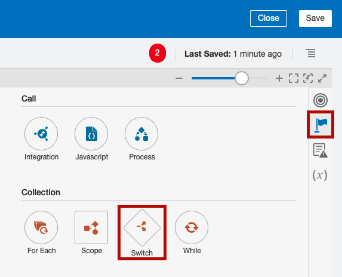Two flow branches appear in the flow:
- Undefined: this branch checks the countOfNewHires. If the expression evaluates to true the instance follows the flow in this branch.
- Otherwise: the instance follows this branch when the routing expression for the initial branch resolves to false.
Define the IF conditional flow
- Select Undefined.
Click
.The Expression Builder appears.
Define an expression to check if the ATOM feed contains any new hires:
- In the Expression Name field, enter
no new hires. - In the Source section, select $countofNewHires_assignment_1.
- Click .
- In the New Condition box, enter
0.0in the field after the equal operator. - Click Validate.
- Click Close.
- In the Expression Name field, enter
- Click Save.
-
Click and from the End section, drag and drop Stop to the Integration canvas and place it after the IF no new hires condition.
This lets the integration complete if there aren't any new hires.
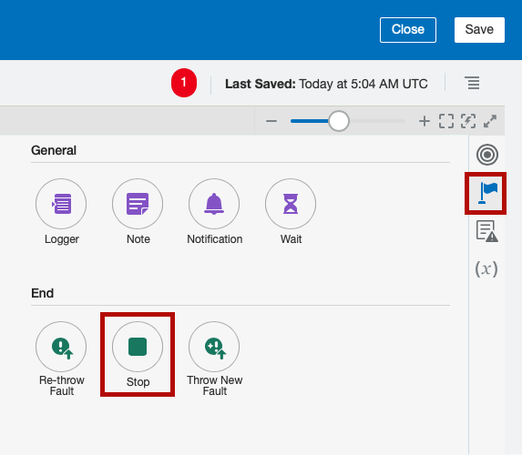
Define the Otherwise Flow
-
Click and from the Data section, drag and drop Assign to the Integration canvas and place it after the Otherwise activity.
The Create Action dialog appears.
This assign activity creates a temporary variable to store the file reference of a stage file activity.
- In the Name field, enter
StageFileRef. - Click Create.
- Click .
Click
in the
Value column, and enter ""in the Expression field.- Click Validate.
- Click Close.
- Click Save.
Process the Records
Let's iterate over the new hires that we got from the ATOM feed in a JSON file, and retrieve the record for each new hire using the HCM Cloud REST service.
-
Click and from the Collection section, drag and drop For Each to the Integration canvas and place it after the StageFileRef activity.
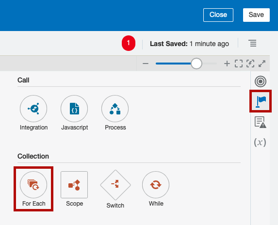The Create Action dialog appears.
- In the Name field, enter
ForEachEntry. Select the EmployeeNewHireFeed_Update element located under EmployeeNewHireFeedResponse.
The EmployeeNewHireFeed_Update represents an individual new hire in the JSON ATOM feed result.
Click .
The EmployeeNewHireFeed_Update element appears in the Repeating Element field.
- In the Current Element Name field, enter
CurEntry. - Click Create.
- Click Save.
Write New Records to Stage
Let's write each new record to a stage file.
Download the newEmployeeFile.csv file.
The PDF says to use newCandidateRecord.csv but the only file I could find was newEmployeeFile.csv. Please confirm this is the right file or provide the newCandidateRecord.csv.
-
Click and from the Data section, drag and drop Stage File to the Integration canvas and place it after the For Each activity.
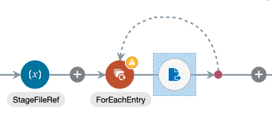The Configure Stage File Action dialog appears.
- Name your action:
WriteRecordToStage. - Click Next.
On the Configure Operation page, enter the following values:
- From the Choose Stage File Operation list, select Write File.
- Click next to the Specify the Name field.
- In the Expression field enter
"newEmployeeFile.csv". - Click Save, and then click OK.
- Click Exit Expression Builder.
- Click next to the
Specify the Output Directory field.
- In the Expression field enter
"/tmp". - Click Save, and then click OK.
- Click Exit Expression Builder.
- Select Append to Existing File.
- Click Next.
- On the Schema Options page, click Next.
On the Format Definition page, enter the following values:
- Click the Browse button next to Select a New Delimited Data File.
Navigate to the location where you stored the
newEmployeeFileyou downloaded earlier and select it.A table with the structure of the
csvfile appears.- In the Record Name field, enter
User. - In the Recordset Name field, enter
NewUser.
- Click Next.
Click Next.
A summary of the properties you configured appears.
- Review the summary and click Done.
- Click Save.
Define the Data Mapping
A Map action named Map to WriteRecordToStage is automatically created. We'll define this data mapping.
- Select the Map to WriteRecordToStage action.
Click
.The Data Mapping page appears.
- In the Sources section, expand CurEntry, then EmployeeNewHireFeed_Update, and then EmployeeNewHireFeed_Context.
- In the Target section, expand NewUser, and then User.
Map the following fields in the Sources section to the fields with the same name in the Target section:
- PrimaryPhoneNumber
- PersonId
- PersonName
- EffectiveStartDate
- EffectiveDate
- WorkerType
- PeriodType
- PersonNumber
- WorkEmail
To map an element, select the element from the Sources section, then while clicking your mouse move it towards the target element. When you reach the target element the line turns green and a check mark appears.
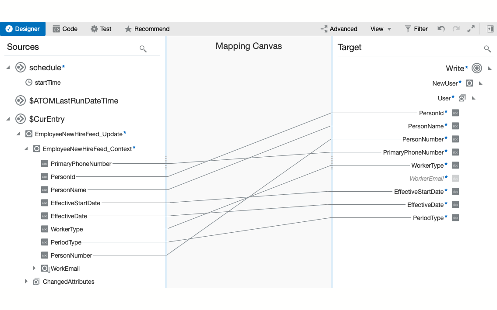- Click Validate.
- Click Close.
- Click Save.
Assign the File Reference
-
Click and from the Data section, drag and drop Assign to the Integration canvas and place it after the writeRecordToStage activity.
The Create Action dialog appears.
- In the Name field, enter
assignStageFileRef. - Click Create.
- In the Name field, enter
assignStageFileRef. Click Create.
The Assign page appears.
- Click .
- From the Variable column select >StageFileRef_assignment_1.
In the Value column, click
.The Expression Builder appears.
- In the Source section, expand WriteRecordToStage, then expand WriteResponse, then expand WriteResponse, and then expand ICSFile.
- Select FileReference.
- Click .
- Click Validate.
- Click Close.
- Click Save.
Upload the File to the FTP
Let's use the FTP adapter to upload the stage file to the FTP server. The FTP server represents the customer's system.
Sign in to the FTP server using the following information:
- URL:
- User Name:
- Password: will be provided during the training session.
- URL:
Create the following directory:
/upload/public_ftp//out- Hover over the outgoing arrow for the end of the for each loop activity and click .
- In the Search field, type
FTP File. Select FTP File Server.
The PDF uses FTP Conn. I'm using FTP File Server because that's what we agreed for the other labs. Please confirm this is correct. I can't test the lab because the HCM connection isn't working because the password changed.
- Name your endpoint:
WriteStageFileToFTP - Click Next.
On the Operations page, enter the following values:
- From the Select Operation list, select Write File.
- From the Select a Transfer Mode group, select ASCII.
In the Output Directory field, enter:
/upload/public_ftp//outIn the File Name Pattern field, enter
newCandidateRecord%yyyyMMddHHmmss%.csv.This pattern will append the year, month, date, and time to the prefix
newCandidateRecord. For example, if you wrote the file on April 18th 2018 at 08:21:00 A.M., the file name isnewCandidateRecord20180418082100.csv
- Click Next.
- On the Schema page, from the Do you want to specify the structure for the contents of the file? group, select No.
- Click Next.
Click Next.
A summary of the properties you configured appears.
- Review the summary and click Done.
Define the Data Mapping
A Map action named Map to WriteStageFileToFTP is automatically created. We'll define this data mapping.
- Select the Map to WriteStageFileToFTP action.
Click
.The Data Mapping page appears.
- In the Target section, expand ICSFile.
- Map the StageFileRef_assignment_1 field in the Sources section, to the FileReference field in the Target section.
- Click Validate.
- Click Close.
- Click Save.
Set the Last Run Date
The last step in the integration is to store the date and time you polled the ATOM feed. The next time this integration runs, it will use this date and time to avoid retrieving duplicated results.
-
Click and from the Data section, drag and drop Assign to the Integration canvas and place it after the end of the Switch activity, before the Stop activity.
I would like to add a screenshot here, but right now I'm not able to run this lab because the credentials are outdated. Will add it after Monday.
The Create Action dialog appears.
- In the Name field, enter
assignATOMLRD. Click Create.
The Assign page appears.
- Click .
- From the list in the Variable column, select ATOMLastRunDateTime (Schedule Parameter).
In the Value column, click
.The Expression Builder appears.
- From the Source section, select
$ts - Click .
Click Validate.
A message confirming the expression is valid appears.
- Click Close.
Click Validate.
A message confirming the action is valid appears.
- Click Close.
- Click Save.
Define the Tracking Fields
Let's configure a business identifier that will identify the integration in reports and monitoring.
On the Integration canvas, click , and then select Tracking.
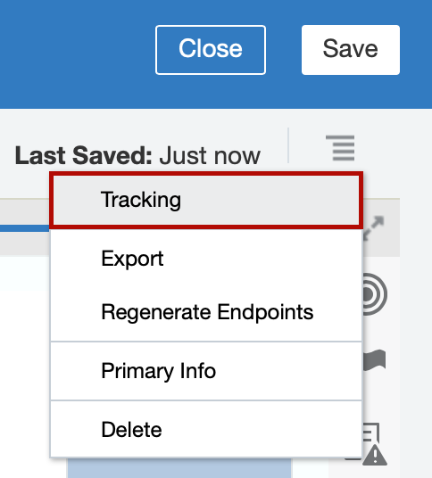
The Business Identifiers for Tracking dialog appears.
- From the Source section, select startTime, and then click .
- Click Save.
- On the Integration canvas, click Save, and then click Close.
Activate the Integration
On the Integrations page, locate your integration and hover over it.
The name of your integration is
Directory Synchronization.When you hover over the integration, a set of actions appear in the Status column.
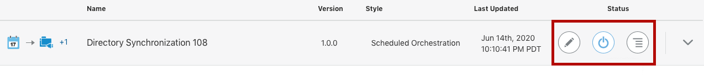- Click
 .
.
- Deselect Contribute integration mappings to Oracle Recommends.
Select Enable Tracing, and then select Include Payload.
Typically these options are disabled in production environments, but we'll enable them for the purpose of this lab.
Click Activate.
The activation will complete in a few seconds. If the activation succeeds, a confirmation message appears at the top of the page, and the status will change to ● Active.
Run the Integration
After the status changes to active, click .
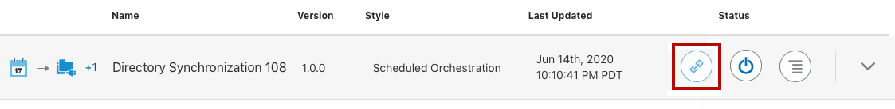- Click Submit Now.
In the Submit Now dialog, click Submit Now.
A confirmation message with a request ID appears.
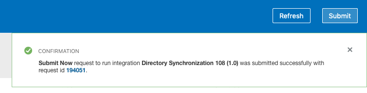Will update this screenshot once I'm able to run the lab.
Click the request ID link in the confirmation message
The Track Runs page appears.
Wait for your integration to complete.
A confirmation message indicating the integration ran successfully appears. The message contains a Run ID link.
Click the Run ID link.
The Tracking Instances page with the tracking summary for the integration appears.
Click the start Time link.
This is the tracking field you configured earlier.
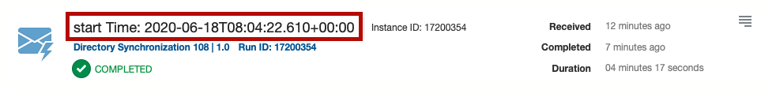Will update this screenshot once I'm able to run the lab.
The flow for your instance appears. The flow is colored in green to indicate that it ran successfully.
Verify the File Was Uploaded to the FTP
Sign in to the FTP server using the following information:
- URL:
- User Name:
- Password: will be provided during the training session.
- URL:
- Browse to your directory:
/upload/public_ftp//out. - Verify that the file was uploaded to your directory.